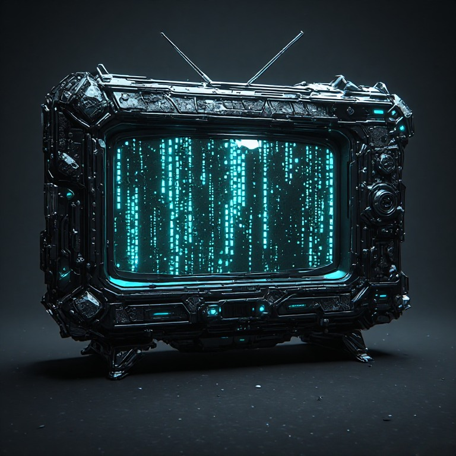

UK TELEVISIONMy ChannelBUSINESS & MARKETS
LIVE TV · DESIGN VIEW
▶Player previewNo video is playing in this prototype
YOUR BUSINESS CHANNEL
MY CHANNELYour chosen stream. Your chosen information.

UK TELEVISIONMy ChannelChoose a preset below to explore the design. In the app, these live under MENU → Channel setup.